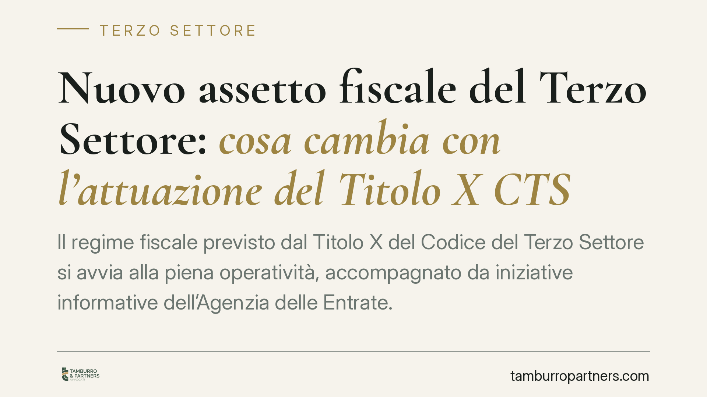

Nuovo assetto fiscale del Terzo Settore: cosa cambia con l'attuazione del Titolo X CTS
Il regime fiscale previsto dal Titolo X del Codice del Terzo Settore si avvia alla piena operatività, accompagnato da iniziative informative dell'Agenzia delle Entrate. Per gli enti iscritti al RUNTS si tratta di un passaggio che incide su contabilità, qualificazione delle attività e scelta del regime impositivo. Conviene arrivarci preparati, non a cose fatte.

Il contesto
Il quadro fiscale degli Enti del Terzo Settore (ETS) è in movimento. Da un lato è atteso il completamento dell'operatività del Titolo X del D.Lgs. 117/2017 (Codice del Terzo Settore, di seguito CTS); dall'altro sono annunciate iniziative informative promosse dall'Agenzia delle Entrate — tra cui un roadshow nazionale — per illustrare l'assetto che ne deriva agli operatori del settore.
Una precisazione doverosa: date, sedi degli incontri e gli estremi esatti dei documenti di prassi interpretativa vanno verificati sulle fonti ufficiali prima di assumere decisioni. In questa sede ragioniamo sulla struttura normativa, che è stabile, e non su singoli appuntamenti o numeri di circolare, che possono variare.
Inquadramento normativo
Il cuore del regime è l'art. 79 CTS, che distingue tra attività di interesse generale svolte con modalità non commerciali e attività commerciali. Il comma 2 fissa i criteri di non commercialità: l'attività si considera non commerciale quando è svolta a titolo gratuito o dietro corrispettivi che non superano i costi effettivi, tenuto conto degli apporti pubblici e dei contributi.
Il comma 5 introduce il test di prevalenza: un ETS si qualifica come ente non commerciale quando le attività svolte con modalità non commerciali risultano prevalenti rispetto a quelle commerciali. È un test da monitorare con continuità, perché la qualifica — e il trattamento fiscale che ne consegue — dipende dal suo esito nel singolo periodo d'imposta.
Va poi tenuto presente l'art. 6 CTS, che disciplina le attività diverse: quelle secondarie e strumentali rispetto alle attività di interesse generale, ammesse entro i limiti definiti dalla normativa attuativa. Non sono vietate, ma la loro gestione incide sulla qualificazione complessiva dell'ente.
Un nodo spesso trascurato riguarda l'efficacia delle misure. L'art. 101, comma 10, CTS contiene una clausola di sospensione: l'operatività di alcune disposizioni fiscali del Titolo X è condizionata all'autorizzazione della Commissione europea in materia di aiuti di Stato. Finché tale condizione non è soddisfatta e formalmente comunicata, le relative misure non producono effetti. È bene verificare lo stato di questo passaggio prima di impostare la pianificazione fiscale su un singolo regime.
Sul piano dei regimi, oltre alla tassazione ordinaria IRES rileva il regime forfetario per gli enti non commerciali disciplinato dall'art. 80 CTS, che consente la determinazione del reddito d'impresa applicando coefficienti di redditività ai ricavi delle attività commerciali.
Implicazioni pratiche
Per un ETS iscritto al Registro Unico Nazionale del Terzo Settore (RUNTS), l'accesso al regime di favore è legato all'iscrizione stessa e al rispetto delle condizioni sostanziali del CTS. Non basta la forma giuridica: contano i criteri di non commercialità e il test di prevalenza, da verificare periodo per periodo.
Le conseguenze operative sono concrete. Chi svolge sia attività non commerciali sia attività commerciali deve tenere una contabilità separata idonea a distinguere le due sfere. Chi si avvicina alle soglie che determinano la qualifica di ente commerciale deve monitorare costantemente i dati, perché il superamento comporta un cambio di regime. Chi valuta il regime forfetario dell'art. 80 deve confrontarlo con la tassazione ordinaria, tenendo conto della propria struttura di costi.
Cosa fare in concreto
- Verificare lo stato di iscrizione al RUNTS e la coerenza dello statuto con le attività effettivamente svolte.
- Impostare una contabilità separata tra attività commerciali e non commerciali, anche quando l'ente si considera non commerciale.
- Calcolare periodicamente il test di prevalenza ex art. 79, comma 5, CTS per anticipare eventuali variazioni di qualifica.
- Confrontare regime ordinario IRES e regime forfetario ex art. 80 CTS sui numeri reali dell'ente, non su stime astratte.
- Controllare, sulle fonti ufficiali, lo stato della clausola di sospensione ex art. 101, comma 10, CTS prima di contare su specifiche agevolazioni.
Un'ultima osservazione. Le iniziative informative dell'Agenzia rappresentano un'utile occasione di aggiornamento. La valutazione degli effetti concreti sul singolo ente resta però un'analisi da condurre caso per caso.
---
Contributo informativo a cura di Tamburro & Partners Avvocati – Avv. Giuseppe Tamburro. Non costituisce parere legale.
Ogni ente del terzo settore ha la sua storia.
Se rappresenti un ETS e vuoi un confronto su governance, RUNTS o fiscalità, scrivi allo studio. Ti rispondiamo entro un giorno lavorativo.